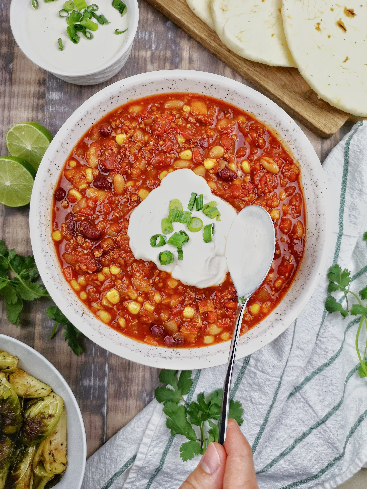

Chili con carne

Description
This Recipe can easily be multiplied and freezes well
Ingredients
- 5 tablespoons vegetable oil
- 2 large onions, chopped
- 1 chile pepper, chopped
- ...
for the complete list of ingredients visit this website.
Steps
- In a medium sized stock pot, heat the oil over medium heat. Saute onion, chile pepper and garlic until soft. Add ground beef: cook and stir until meat is browned.
- Pour in tomatoes with liquid, salt, pepper, cumin, chili powder, paprika, oregano, cinnamon sticks, and cloves. Cover and simmer for 45 minutes.
- Stir in kidney beans, and cook another 15 minutes. Remove cinnamon sticks before serving.